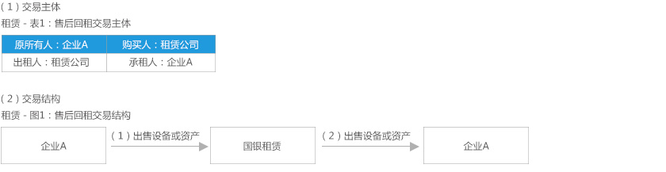
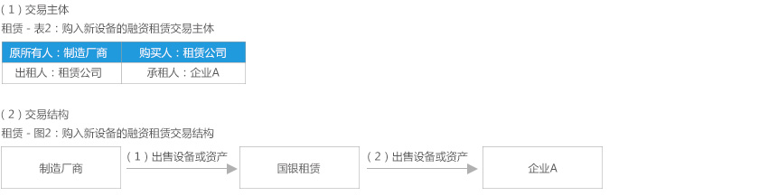
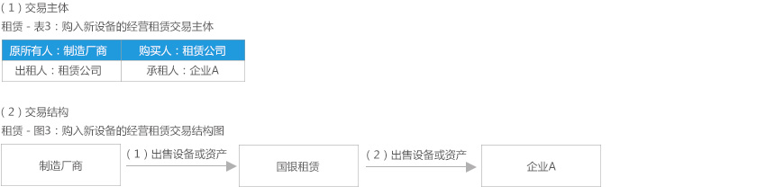
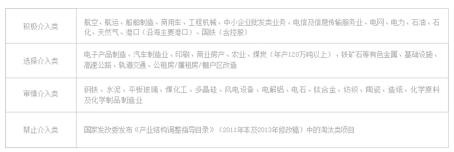
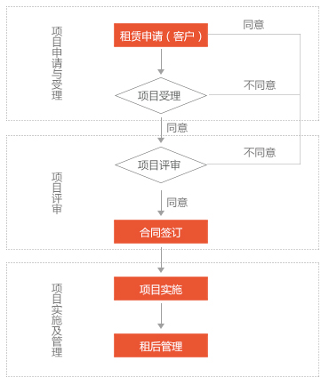
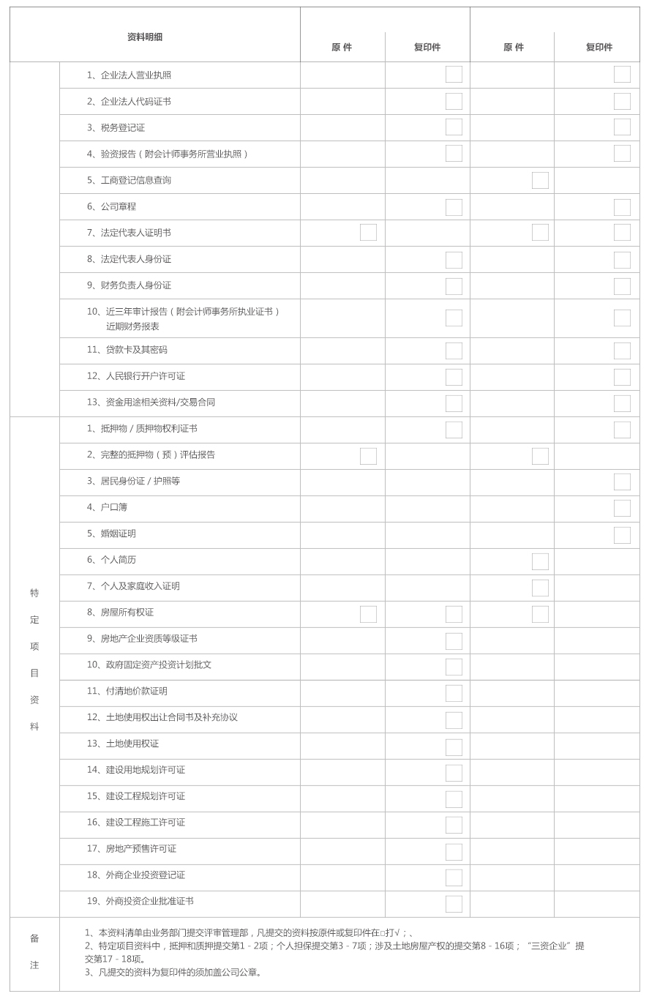

租赁是按照达成的契约协定，出租人把拥有的特定财产在特定时期内的使用权转让给承租人，承租人按照协定支付租金的交易行为。
按照与资产所有权有关的全部或绝大部分风险与收益是否转移为标准，租赁业务被划分为经营性租赁和融资性租赁。
银监会2014年3月颁布的《金融租赁公司管理办法》关于融资租赁的定义是，出租人根据承租人对租赁物和供货人的选择或认可，将其从供货人处取得的租赁物按合同约定出租给承租人占有、使用，向承租人收取租金的交易活动。适用于融资租赁交易的租赁物为固定资产，银监会另有规定的除外。中国企业会计准则—21号判断融资租赁的标准是：
（1）在租赁期届满时，租赁资产的所有权转移给承租人；
（2）承租人有购买租赁资产的选择权，所订立的购买价款预计将远低于行使选择权时租赁资产的公允价值，因而在租赁开始日就可以合理确定承租人将会行使这种选择权；
（3）即使资产的所有权不转移，但租赁期占租赁资产使用寿命的大部分；
（4）承租人在租赁开始日的最低租赁付款额现值，几乎相当于租赁开始日租赁资产公允价值；出租人在租赁开始日的最低租赁收款额现值，几乎相当于租赁开始日租赁资产公允价值；
（5）租赁资产性质特殊，如果不作较大改造，只有承租人才能使用。
经营租赁，是指除融资租赁以外的其他租赁，出租人不仅要向承租人提供设备的使用权，还要向承租人提供设备的保养、保险、维修和其他专门性技术服务的一种租赁形式。经营租赁是一项可撤消的、不完全支付的租赁业务，通常留有残值。
金融租赁是集“融资”与“融物”相结合的新型融资工具，为企业引进新设备、投资新项目、盘活固定资产等需求提供了更便捷、更适合的融资渠道。
企业对计划购入的新设备采取融资租赁或经营租赁，或对已投产的二手设备采取售后回租，并通过配置合适的中长期融资租赁方案，使企业盘活了固定资产，解决运营资金或扩大生产的资金需求，同时又能实现良好的资金循环和融资成本的降低。
租赁公司作为出租人同时拥有债权和物权，因此对承租人的要求更低更灵活，对承租人本身没有资本金限制。
企业理论上可以最高按租赁物的100%价值进行租赁融资，极大提高了企业设备“变现”融资比例，而且不占用企业在银行的授信额度。
采用租赁融资提供给企业的资金监管较为宽松，有利于企业进行灵活的资金安排。
企业可通过经营性租赁实现表外融资、通过售后回租优化资产结构，对改善企业财务指标、优化资产负债结构起到良好作用，增强了承租人的实际融资能力。
根据企业资金实力量身定做还款方案，租期设定可长可短，还款（租金）方式灵活，使企业避免发生流动性风险，提高资金使用效率。
会计准则允许企业对租赁物件进行加速折旧，因此企业可以获得纳税延迟的优惠政策。
通过对生产企业提供“以租代销”的租赁模式，可降低客户购买门槛、增强客户购买力，使企业实现扩大产品销路，提前获得销售资金并加速资金周转的经营效果。
企业通过分期支付租金方式率先更新使用新设备和新技术，以较低的成本提高了生产能力和市场竞争力，使企业实现“借鸡生蛋、以蛋换钱”的资本融资捷径。
融资租赁的实质是通过融物的方式达到融资的目的，适合于运营固定资产并有融资需求的企业。开展租赁业务的前提条件：
（1）租赁物必须是固定资产。
（2）租赁物产权清晰，使租赁物的名义所有权可从资产出售方转到出租方。
（3）项目有满足支付租金并稳定、可覆盖项目租赁期的现金流收入。
主要业务方面：飞机、船舶、高速公路、工程机械、商用车、轨道交通、房地产、中小企业融资、城市基础设施及其它企业生产用的大型设备等方面的租赁，以及帮助企业“走出去”的跨境租赁等。
实际业务中租赁主要有3种模式：售后回租、购入新设备的直接融资租赁、购入新设备的经营租赁。
在实际业务合作中，由于受承租人、出租人、设备供货厂商、租赁物是否跨国以及承租人的特殊需求等因素影响，在具体的租赁操作上可以延伸出不同的业务合作类型，如厂商租赁、跨境租赁、税务租赁、委托租赁等。
下面以国家开发银行控股的国银金融租赁有限公司（简称“国银租赁”）为例，逐一说明租赁业务主要模式。

简要说明：企业A将自有设备或资产出售给租赁公司，再从租赁公司处租回，根据租赁期满产权是否归属承租人而划分其业务性质为融资租赁或经营租赁。通常租赁公司会要求售后回租业务在租赁期满时由承租人留购设备或资产。

简要说明：租赁公司向制造厂商购买企业A指定的设备或资产，再将该设备或资产出租给企业A。租赁期满时，将由企业A留购设备或资产。

简要说明：租赁公司向制造厂商购买企业A指定的设备或资产，再将该设备或资产出租给企业A，但在租赁期满时，由租赁公司收回该设备或资产进行处置，而不由企业A留购。通常情况下，由于租赁公司承担了设备残值风险，租赁公司将选择流动性高、变现能力强、资产保值能力强的设备作为租赁物。 目前国银租赁主要对飞机开展经营租赁业务，并在积极探索开展船舶及其它设备经营租赁业务。
在具体业务中，由于部分操作环节、市场形势的变化，可能延伸开发出新的业务类型，但由于不涉及到其本质——所有权的变化，此处不再赘述，仅部分列举如下：
厂商租赁：租赁公司与制造商合作，制造商安排承租人，租赁公司提供融资服务，租赁成为制造商产品销售的一种模式，遂被称为厂商租赁。
跨境租赁：在上述结构中，假设企业A为境外公司，则被称为跨境租赁。
税务租赁：在上述结构中利用某一国家或地区的特殊政策法规，设计特别的税务安排，这种模式被称为**税务租赁。（注：**通常代表该种租赁安排能够减免的税种名称）。
2008年国家开发银行控股设立国银租赁，打造自己的租赁业务平台，一方面完善综合金融服务功能，建立集团组织架构；另一方面，发挥有别于其他商业银行的资源优势，推动租赁业服务实体经济。7年来，国银租赁依托开行的资源优势，抢抓机遇，坚持创新驱动发展，快速发展壮大为开行集团架构下重要的租赁业务板块，成为在市场上具有较大影响力的租赁公司，为服务开行战略、促进经济社会发展做出了较大的贡献。
（1）资产规模保持了较快的发展速度。截至2014年末，公司总资产1,403.66亿元，2008-2014年公司资产年均复合增长率接近65%，总资产占国内在册营运的26家金融租赁公司资产总额的11%，占据了较高的市场份额。
（2）专业化水平不断提高。公司航空、船舶、车辆、工程机械等租赁业务专业化较强，其资产占比超过50%，且飞机、商用车、工程机械等专业领域的业务不断成熟和壮大，引领行业发展，打造了公司品牌和核心竞争力，公司最具租赁特色的经营租赁资产同业占比接近35%，领先同业。
（3）业务多元化格局基本形成。公司面向市场求发展，已建立起多行业发展、多产品共存、境内外并举的租赁业务体系，业务领域涉及航空、船舶、车辆、工程机械、基础设施、大型设备、房产、中小企业等，境内业务覆盖除西藏以外的所有省份，并积极开拓海外业务市场，已与境外20多个国家和地区开展了业务合作，国际业务占比近40%。
（4）服务开行战略的作用日益显现。公司作为开行的租赁业务平台，积极参与打造集团“投贷债租证”综合金融服务优势，协同集团实施服务国家发展战略，重点在“两基一支”、大中型企业设备及其“走出去”等领域加强业务协同，通过发挥租赁业务的功能，缓解了贷款项目资本金约束问题，支持了开行重点客户和重点项目，为服务全行整体业务发展发挥了积极作用。
根据国家产业和环保政策，考虑行业发展周期等因素，结合业务实际开展情况，国银租赁目前行业投向如下：

（备注：业务投向将据需要每年进行修订）
（1）提出租赁申请；
（2）配合出租人进行业务考察、评估；
（3）业务洽谈；
（4）配合出租人业务审批（如补充材料或说明等）；
（5）签订租赁合同；
（6）获得租赁资金或租赁物；
（7）支付租金，配合出租人租后管理；
（8）配合出租人租赁期末租赁物处理。

金融租赁是集“融资”与“融物”相结合的新型融资工具，为企业引进新设备、投资新项目、盘活固定资产等需求提供了更便捷、更适合的融资渠道。
（1）赁项目申请书，内容包括：项目名称、项目所属行业、承租人信用等级、租赁标的物（租赁物）以及项目详细信息等。
（2）承租人基本情况相关资料，包括但不限于营业执照、企业法人代码证书、税务登记证、验资报告（附会计师事务所营业执照）、工商登记信息查询、公司章程、法定代表人证明书、近3年审计报告书（需附注）、近期报表（附会计师事务所执业证书）、资金用途相关资料/交易合同、承租人目前在金融机构融资情况、预计租赁期内新增负债、租赁期内贷款本金偿还计划、主营业务收入、主营业务成本及明细等。
项目基础资料清单如下表所示
